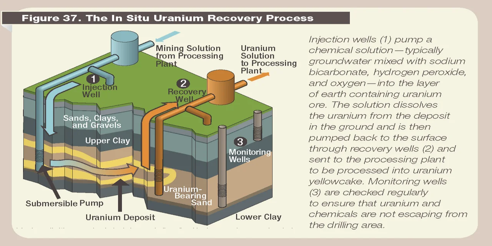

엔코어 에너지 주주가 지금 가장 궁금해할 질문은 단순히 “우라늄 가격이 오르면 EU도 오를까”가 아닙니다. 더 정확한 질문은 “엔코어가 미국 ISR 우라늄 생산자로서 실제 납품 가격과 생산 원가의 간격을 넓힐 수 있을까”입니다. 우라늄 테마가 좋아도 생산 초기 기업은 계약 가격, 재고 원가, 추출 비용, 허가 일정이 조금만 어긋나도 주가가 크게 흔들립니다. 엔코어는 개발 스토리만 있는 회사가 아니라 실제 U3O8를 추출하고 계약에 납품하는 회사입니다. 그래서 더 전문적으로 봐야 합니다.
2025년 연간 실적 발표에서 엔코어는 U3O8 약 699,807파운드를 추출했고, 약 655,000파운드를 계약에 납품했다고 밝혔습니다. 평균 납품 가격은 파운드당 65.89달러, 가중평균 원가는 파운드당 51.09달러였습니다. 이 숫자만 보면 생산 확대와 마진 개선 가능성이 보입니다. 하지만 2026년 1분기 실적에서는 270,000파운드를 평균 67.78달러에 납품했고, 납품 U3O8의 가중평균 원가는 68.02달러였습니다. 이 구간에서는 매출이 곧 이익으로 이어졌다고 보기 어렵습니다.
따라서 엔코어 분석의 출발점은 생산량이 아니라 스프레드입니다. 추출량이 늘고 계약 납품이 이어지는 것은 긍정적입니다. 그러나 납품 가격과 원가가 붙어 있으면 주주가 기대하는 레버리지는 아직 충분히 나오지 않습니다. 엔코어는 우라늄 가격 상승의 수혜주일 수 있지만, 동시에 생산 초기 비용과 계약 구조를 통과해야 하는 실행주입니다.
엔코어의 핵심은 Rosita와 Alta Mesa의 반복 생산입니다

엔코어의 사업을 이해하려면 ISR을 먼저 봐야 합니다. ISR은 땅을 크게 파내는 전통 광산 방식이 아니라, 지하 광체에 용액을 순환시켜 우라늄을 회수하는 방식입니다. 지표 교란이 작고 재가동 속도가 빠를 수 있지만, 지질 조건, 허가, wellfield 설계, 용액 회수율이 모두 맞아야 합니다. 같은 우라늄 가격에서도 ISR 운영 능력이 약하면 생산량은 기대보다 늦게 나옵니다.
엔코어의 현재 생산 축은 남부 텍사스의 Rosita와 Alta Mesa입니다. Rosita는 중앙처리시설 역할을 하고, Alta Mesa는 이미 운영 중인 생산 기반입니다. 회사가 강조하는 강점은 미국 내 ISR 경험과 다수 프로젝트를 연결할 수 있는 허브 구조입니다. 이것이 성공하면 엔코어는 단일 광산이 아니라 여러 satellite wellfield에서 resin feed를 받아 처리하는 생산 플랫폼으로 진화할 수 있습니다.
하지만 투자자는 “플랫폼”이라는 단어에 너무 빨리 반응하면 안 됩니다. 플랫폼이 되려면 반복 생산, 안정 원가, 계약 납품, 허가 속도가 같이 맞아야 합니다. 2026년 1분기 U3O8 추출량은 90,000파운드로 전년 동기 73,711파운드보다 약 22% 증가했습니다. 긍정적인 방향입니다. 다만 같은 분기 추출 비용은 파운드당 46.43달러였고, 납품 원가는 68.02달러였습니다. 추출 비용과 납품 원가 사이의 차이를 이해하지 못하면 엔코어의 손익을 잘못 읽게 됩니다.
Upper Spring Creek은 성장 옵션이지만 허가가 먼저입니다
관련 영상
엔코어 에너지 EU와 원전 르네상스 투자 포인트를 설명하는 한국어 영상
2026년 6월 엔코어는 Upper Spring Creek ISR 프로젝트의 Satellite Remote IX Plant 1단계 건설 완료를 발표했습니다. 이 시설은 Rosita 중앙처리시설에 uranium-loaded resin feed를 공급하는 역할을 목표로 합니다. 회사는 최종 허가를 받은 뒤 2026년 말 운영 단계로 넘어갈 계획이라고 밝혔습니다. 이 뉴스는 중요한 전환점입니다. 엔코어가 단순히 Rosita와 Alta Mesa만 돌리는 회사가 아니라, 여러 위성 프로젝트를 붙이는 구조로 갈 수 있기 때문입니다.
다만 여기서도 순서가 중요합니다. “건설 완료”와 “상업 생산 기여”는 같은 말이 아닙니다. 최종 허가가 필요하고, wellfield가 안정적으로 돌아가야 하며, resin feed가 Rosita 처리시설에 실제로 들어가야 합니다. 생산 초기에는 예상보다 회수율이 낮거나 비용이 높을 수 있습니다. 그래서 Upper Spring Creek은 긍정적인 성장 옵션이지만, 아직 손익계산서에 완전히 반영된 숫자는 아닙니다.
Alta Mesa East도 같은 방식으로 봐야 합니다. 엔코어는 2026년 6월 Alta Mesa East 초기 탐사에서 기존 Alta Mesa 운영지 동쪽으로 3,700피트 이상 우라늄 광화가 연장됐다고 발표했습니다. 이는 장기 확장 가능성을 보여주지만, 탐사 결과가 곧바로 현금흐름이 되는 것은 아닙니다. 투자자가 확인해야 할 것은 추가 시추, wellfield 포함 가능성, 허가, 생산 전환 속도입니다.
UEC와 비교하면 엔코어는 숫자가 더 보이지만 규모는 작습니다
우라늄 에너지 UEC와 엔코어는 미국 ISR 생산 재개라는 같은 축에서 자주 비교됩니다. UEC는 프로젝트 포트폴리오와 미국 공급망 재건 스토리가 크고, 보유 자산과 재고 옵션을 함께 봐야 하는 회사입니다. 반면 엔코어는 2025년과 2026년 1분기에 실제 추출량과 계약 납품량을 보여줬습니다. 이 점에서 엔코어는 “숫자가 조금 더 보이는 생산 전환형”입니다.
그러나 숫자가 보인다고 해서 위험이 낮다는 뜻은 아닙니다. 오히려 숫자가 보이면 마진 압박도 더 선명하게 드러납니다. Q1 2026에서 엔코어의 평균 판매 가격은 67.78달러였고 납품 원가는 68.02달러였습니다. UEC는 생산 재개 기대와 자산 가치가 주가를 움직일 수 있지만, 엔코어는 실제 납품 스프레드가 바로 평가를 받습니다. 엔코어 주주는 우라늄 가격보다 “계약 가격이 원가보다 얼마나 넓게 벌어지는지”를 더 자주 확인해야 합니다.
전망을 나누면 이렇습니다. 우라늄 가격이 강하고 미국산 공급 프리미엄이 커지며 엔코어가 생산 비용을 낮추면 엔코어의 주가 레버리지는 UEC 못지않을 수 있습니다. 반대로 허가가 늦고 비용 절감이 지연되면, 생산을 한다는 사실이 오히려 원가 부담으로 드러납니다. UEC는 옵션성이 크고, 엔코어는 실행 검증 압력이 더 큽니다.
UUUU와 비교하면 처리 인프라보다 ISR 생산성이 관건입니다
에너지 퓨얼스 UUUU는 엔코어와 다른 위치에 있습니다. UUUU는 미국 내 White Mesa Mill과 우라늄, 바나듐, 희토류 처리 역량을 함께 보는 회사입니다. 즉 “미국 내 전략 광물 처리 병목”이라는 색깔이 강합니다. 엔코어는 이보다 더 순수하게 ISR 우라늄 생산성과 South Texas 프로젝트 실행력을 봅니다.
이 차이는 투자 판단에서도 중요합니다. UUUU는 우라늄 가격뿐 아니라 미국 내 처리 시설 가치, 희토류 사업의 손익 기여, 정책 수혜를 함께 평가해야 합니다. 대신 사업이 여러 방향으로 나뉘어 투자 논리가 복잡합니다. 엔코어는 논리가 더 단순합니다. U3O8를 얼마나 뽑고, 얼마에 팔고, 얼마의 원가로 납품하는지입니다. 단순한 만큼 분기 숫자가 냉정하게 반영됩니다.
우라늄 공급망 전체가 병목에 걸린다면 UUUU의 처리 인프라가 더 크게 재평가받을 수 있습니다. 반대로 광산 생산 재개와 ISR 회수율 개선이 먼저 주목받는 장세에서는 엔코어의 설명력이 더 좋아질 수 있습니다. 그래서 두 종목은 대체재라기보다 병목 위치가 다른 투자 대상입니다. 엔코어는 광산·wellfield 실행력, UUUU는 처리·밀링과 전략 광물 옵션입니다.
CCJ와 비교하면 안정성과 레버리지의 교환입니다
카메코 CCJ는 비교 기준입니다. 카메코는 대형 우라늄 생산자이고, 2026년 1분기에 McArthur River/Key Lake와 Cigar Lake 생산을 정상 궤도로 언급했습니다. 2026년 우라늄 부문 생산 가이던스도 자사 몫 19.5~21.5Mlb U3O8로 제시했습니다. 엔코어의 2025년 추출량 약 699,807파운드와 비교하면 규모 차이가 큽니다.
이 규모 차이는 안정성 차이입니다. 카메코는 장기 계약, 대형 광산, 연료 서비스, Westinghouse 노출까지 있어 우라늄 사이클을 더 넓게 흡수합니다. 엔코어는 훨씬 작고, 프로젝트별 허가와 비용 변화에 민감합니다. 대신 엔코어는 작은 규모 때문에 생산 증가율과 미국산 ISR 프리미엄이 주가에 더 크게 반영될 수 있습니다. 안정성은 카메코, 고위험 성장 레버리지는 엔코어입니다.
따라서 보수적인 투자자는 카메코를 기준으로 우라늄 사이클을 보고, 더 공격적인 투자자는 엔코어의 생산 확대와 비용 개선을 추적할 수 있습니다. 다만 엔코어를 카메코처럼 평가하면 안 됩니다. 카메코는 이미 검증된 대형 생산자이고, 엔코어는 검증 중인 미국 ISR 생산 플랫폼입니다. 같은 우라늄 가격 상승이라도 두 회사의 리스크는 전혀 다릅니다.
엔코어의 전망은 계약 가격과 허가 속도에서 갈립니다
엔코어의 긍정 시나리오는 명확합니다. Rosita와 Alta Mesa 생산이 안정화되고, Upper Spring Creek이 최종 허가를 받아 2026년 말 운영 단계로 넘어가며, Alta Mesa East가 확장 wellfield로 연결되는 경우입니다. 여기에 신규 장기계약 가격이 기존 계약보다 높아지고, 추출 비용이 낮아지면 엔코어는 미국 ISR 생산주로 재평가받을 수 있습니다. 이 경우 UEC보다 숫자가 빠르게 보이고, UUUU보다 투자 논리가 단순하며, CCJ보다 성장률 레버리지가 클 수 있습니다.
중립 시나리오는 생산량은 늘지만 원가와 납품 가격의 차이가 크게 벌어지지 않는 경우입니다. 이때 주가는 우라늄 가격과 뉴스에 반응하겠지만, 지속적인 재평가를 받기 어렵습니다. Q1 2026처럼 평균 판매 가격 67.78달러와 납품 원가 68.02달러가 붙어 있으면, 투자자는 “생산하고 있다”보다 “남기고 있는가”를 먼저 물어야 합니다.
부정 시나리오는 허가 지연, wellfield 성능 부진, 비용 상승, 추가 자금조달 우려가 동시에 나오는 경우입니다. 특히 생산 초기 기업은 한 분기 숫자가 작아도 시장의 신뢰가 빠르게 흔들릴 수 있습니다. Richard H. Little CEO 체제에서 회사는 비용 절감, 운영 효율, 허가 승인 속도, 주주 커뮤니케이션을 강조하고 있습니다. 이제 필요한 것은 말이 아니라 분기별 숫자입니다.
결론적으로 엔코어 에너지는 “우라늄 가격 수혜주”라는 한 문장으로 끝낼 종목이 아닙니다. 이 회사는 미국 ISR 생산 실행력, 계약 납품 스프레드, Upper Spring Creek 허가, Alta Mesa East 확장, 유동성 관리가 동시에 맞아야 가치가 올라가는 종목입니다. UEC보다 숫자가 더 보이는 대신 실행 압박이 크고, UUUU보다 논리는 단순하지만 처리 인프라 옵션은 약하며, CCJ보다 성장 레버리지는 크지만 안정성은 낮습니다. 엔코어를 볼 때 가장 중요한 질문은 하나입니다. 다음 몇 분기 동안 이 회사가 더 많이 뽑는 것에서 더 많이 남기는 회사로 바뀌고 있는가입니다.